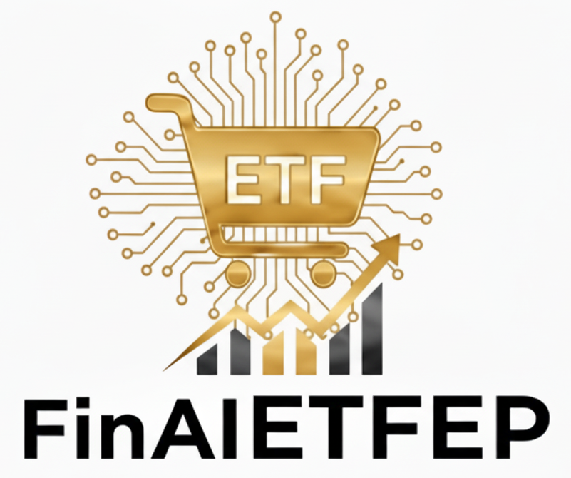

關於我們 (About Us)
我們的願景
我們相信，精準的金融數據分析不應該是少數專家的專利，FinAIETFEP 團隊的目標是**民主化 ETF 數據洞察**，讓每位使用者都能借助 AI 的力量，自信、準確地理解和高效應用 ETF 這種主流的投資工具。
我們致力於將複雜的 AI 和數據工程技術，轉化為對使用者友善、且具備高實用性的數據分析工具。

🚀 **AI 驅動，輕鬆理解與應用 ETF 數據！**
FinAIETFEP 是一個旨在解決「一般使用者難以消化和應用複雜 ETF 數據」痛點的創新平台
我們利用人工智慧（AI）技術，將海量的 ETF 數據轉化為**簡潔的、可行動的、易於理解的數據洞察**，無論您是個人投資者、企業數據使用者，還是金融專業人士，FinAIETFEP 都能幫助您：
自動為任何 ETF 報告生成簡單、直接的洞察總結，無需再被專業術語和冗長文件困擾。
提供直觀的解答，讓使用者能快速篩選、比較和分析不同 ETF 的績效、費用和組成。
為專業用戶提供乾淨的 API 介面，便於將數據整合到企業的內部系統或分析模型中。
FinAIETFEP 的價值在於在顧及準確性的情況下提升金融數據的使用效率：
幫助個人使用者高效獲取必要資訊，使使用者能快速獲取想要的資訊。
成為企業內部數據分析、報告生成和業務規劃的可靠工具，確保數據洞察的一致性。
我們相信，精準的金融數據分析不應該是少數專家的專利，FinAIETFEP 團隊的目標是**民主化 ETF 數據洞察**，讓每位使用者都能借助 AI 的力量，自信、準確地理解和高效應用 ETF 這種主流的投資工具。
我們致力於將複雜的 AI 和數據工程技術，轉化為對使用者友善、且具備高實用性的數據分析工具。
| 分類 | 主要技術 | 簡介 |
|---|---|---|
| 數據科學與 AI | Python, Pandas, OpenAI API / 專屬模型 | 核心數據處理、智能摘要與洞察生成。 |
| 使用者介面 | Gradio | 打造快速、響應式的數據儀表板。 |
| 後端 | yfinance | 數據來源。 |
FinAIETFEP 是一個開源專案，我們歡迎所有形式的貢獻，無論是：
感謝您與我們一同提升 ETF 數據的透明度和使用效率！